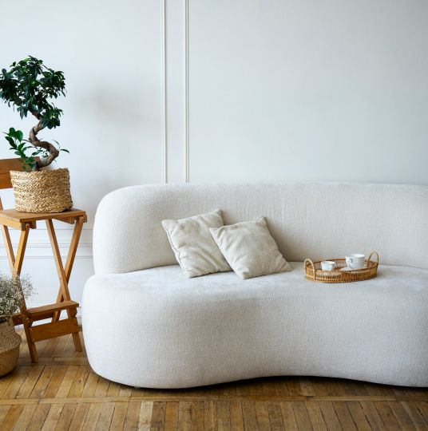

<section class="occupation-section" id="occupation">
  <div class="container">
    <div class="occupation-container-list-box">
      <div class="occupation-container-text">
        <h2 class="adout-us">About us</h2>
        <p class="occupation-title"
          >Our сraftsmanship: сreating unique handmade furniture</p
        >
        <p class="occupation-text"
          >Discover the inspiration behind our modern and minimalist designs,
          and see how we bring them to life through our skilled
          craftsmanship.
        </p>
      </div>
      <div class="occupation-container-list">
        <ul class="occupation-list">
          <li>
            <p class="occupation-text-li">
              <span data-counter="5">5</span>+</p>
            <p class="occupation-text"></p>
              Years of experience creating handcrafted furniture
            </p>
          </li>
          <li>
            <p class="occupation-text-li">
              <span data-counter="100">100</span>%</p>
            <p class="occupation-text">
              Sustainably sourced materials used in all of our furniture
            </p>
          </li>
          <li>
            <p class="occupation-text-li">
              <span data-counter="500">500</span>+</p>
            <p class="occupation-text">
              Unique furniture designs crafted by our skilled artisans
            </p>
          </li>
        </ul>
      </div>
    </div>
    <div class="mobile-img-wrapper">
      <picture>
        <!-- Desktop screen -->
        <source
          media="(min-width: 1440px)"
          srcset="
            /img/occupation/desktop/about-us_desk.webp    1x,
            /img/occupation/desktop/about-us_desk@2x.webp 2x
          "
          type="image/webp"
        />
        <source
          media="(min-width: 1440px)"
          srcset="
            /img/occupation/desktop/about-us_desk.jpg    1x,
            /img/occupation/desktop/about-us_desk@2x.jpg 2x
          "
          type="image/jpeg"
        />
        <!-- Tablet screen -->
        <source
          media="(min-width: 768px)"
          srcset="
            /img/occupation/tablet/about-us_tab.webp    1x,
            /img/occupation/tablet/about-us_tab@2x.webp 2x
          "
          type="image/webp"
        />
        <source
          media="(min-width: 768px)"
          srcset="
            /img/occupation/tablet/about-us_tab.jpg    1x,
            /img/occupation/tablet/about-us_tab@2x.jpg 2x
          "
          type="image/jpeg"
        />
        <!-- Mobile screen -->
        <source
          media="(max-width: 767px)"
          srcset="
            /img/occupation/mobile/about-us_mob.webp    1x,
            /img/occupation/mobile/about-us_mob@2x.webp 2x
          "
          type="image/webp"
        />
        <source
          media="(max-width: 767px)"
          srcset="
            /img/occupation/mobile/about-us_mob.jpg    1x,
            /img/occupation/mobile/about-us_mob@2x.jpg 2x
          "
          type="image/jpeg"
        />
        
      </picture>
    </div>
  </div>
</section>
